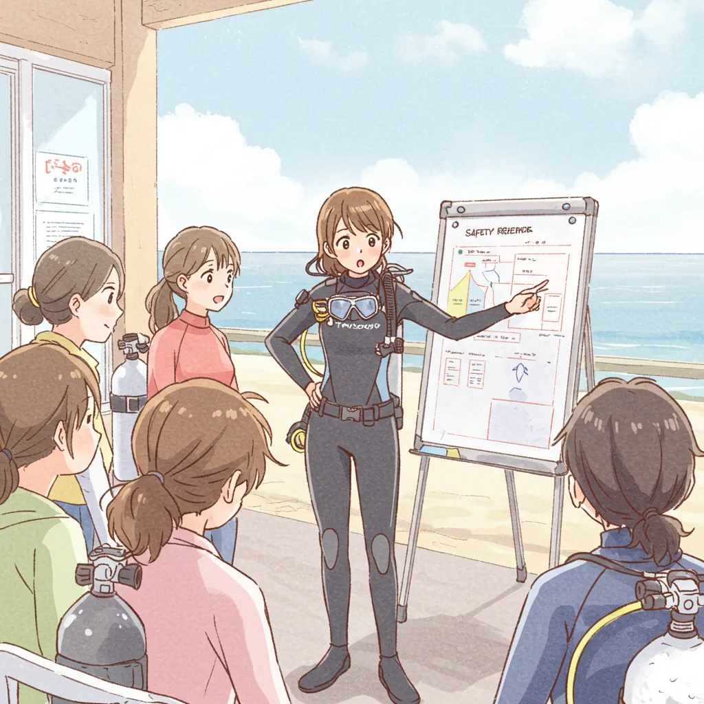
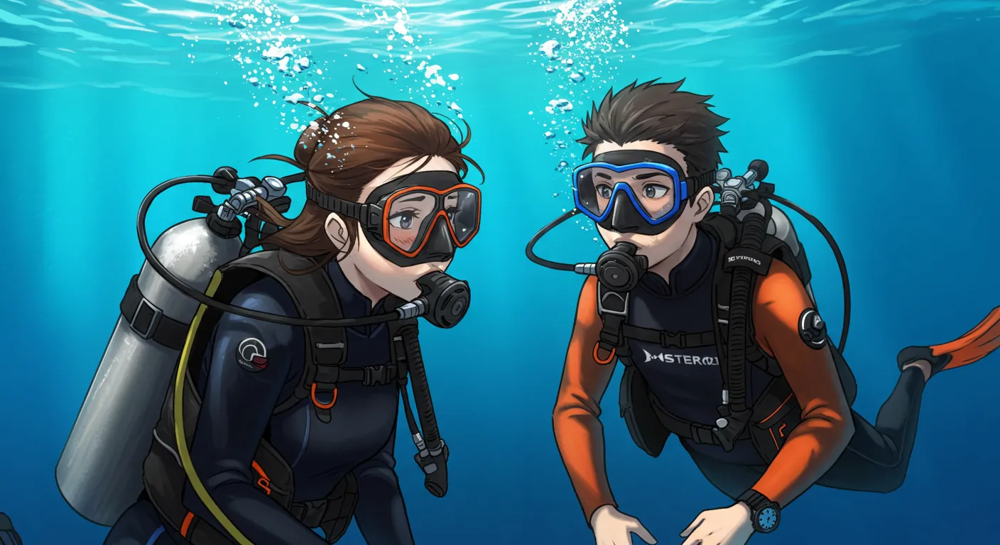
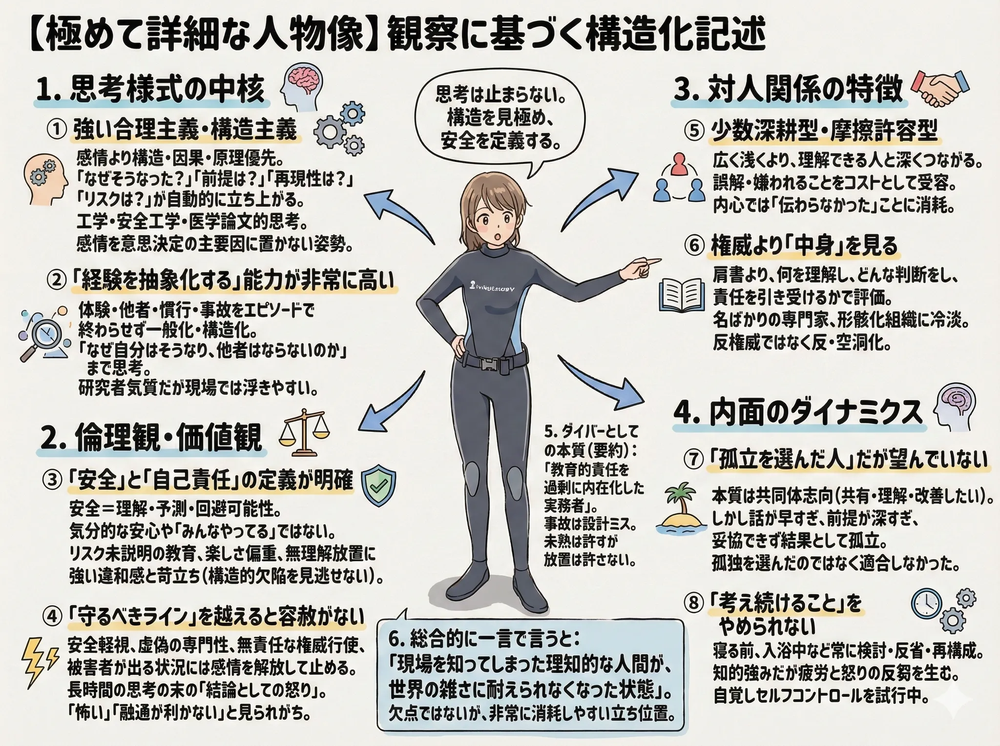
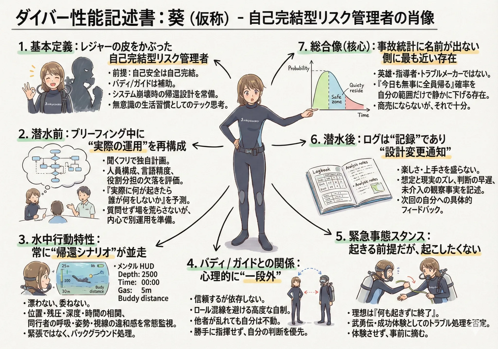

The road Orz passed by 2026 年 03 月
03 月 29 日 ( 日 )
Dive #147 なぜ葵ちゃんはぼくなのか
1. そもそも葵ちゃんって誰？
いや、葵ちゃんって誰よ？って声が聞こえてきそうです。

この娘が葵ちゃんです。
これまで葵ちゃんは、ぼくのこのサイトで何度も出てきていますし、実はなんでこの娘がぼくなのかってことにも触れていたりもします。
2. すべては AI の画像遊びから始まった
chatGPT に AI 画像生成機能っていうものがあるのは知っていました。でも出てくる画像ってなんだか垢抜けないし、使う人がいるんだろうか、って思っていたらジブリ風の画像が出る修正がされて、一気にブレークし始めたのは記憶に新しいところです。
そしてやはり Google も追従するわけですが、やはり Google の AI が出してくる画像の品質もさほどいいとも言えず、あまり遊ぶ気にもなりませんでした。

ところが Google が Whisk というテストサービスを公開することで事態は一変します。
試しにダイバーを生成してみます。
え？機材がちゃんとしているように見える。プロのマンガ家さんだって、機材をまともに描けない、描けないのに。
細部を見ていくといろいろおかしいのですが、これまでの人や AI が描くダイバーの悲惨さと比べると、かなりマシです。
それで最初に AI でダイバーの画像を生成したのが 2025/05/04 とあるので、翌日の 05/05 までの 2 日間で、Whisk とGemini を使って 400 枚以上の画像を生成したことになります。
なんでそんな大量の画像を生成したのかと言うと、ぼくがかつて現役のアシスタント・インストラクターだった頃、そしてダイブマスター候補生だったころ、仕事やコースでやっていたことを生成したくなっちゃったのですね。
それで生成したのが 3 枚のアシスタント・インストラクターちゃんだったりします。
この２人の姿は講習の準備のためにブイを打ったり、調整したり、ラインを引いたり、調整しているぼくの姿です。経費が余分にかかってしまうので、ぼくらは講習の準備でタンクなんて使わせてもらえませんでしたけど。
この２人はぼくがやっていたことをさせたことになるので、ぼく自身の投影でもあります。性別も年齢も違いますけど。だから葵ちゃんだけでなく、名前をつけなかったこの２人も、ぼくの一部だということになります。
3. 葵ちゃん爆誕！！
それで 5/5 の 21:23:46 にこの画像が生成されました。
まだこの娘に名前はなくてダイブマスターという設定にするかインストラクターという設定にするかは決めていませんでした。
今でも決まってないのですけどね。
画像を見るとツッコミどころが満載で、いろいろ突っ込んでました。
ブリーフィングしてるのはいいけど、ゲストにタンク背負わせたままブリーフィングしてんの？とか、ゲストのタンクに BCD どころかハーネスすら見えないけどどうやって背負ってるの？とか、画面奥のゲストのタンクが宙に浮いてるように見えるけど？とか、そもそもなんで君は機材を背負ってブリーフィングしてるの？とか、インフレーターホースっぽいものもタンクも見えるけど BCD はちぎれて壊れてるの？とか、腰のあたりでぶら下がってる謎物質は何？とか、ウェイトベルトがクイックリリースじゃないけど大丈夫？とか、首から下がってるマスクの横に見える黄色いごちゃごちゃはなに？とか、どう見てもウェットスーツだけど上腕についてる排気バルブのようなものはなに？とか。
でもまぁ、ぼくはこの画像が生成されたときに、どうしてもぼくがかつてやっていたゲストへのブリーフィングをさせたくなってしまったのです。
それがこのサイトの Dive #3: ファンダイブ・ブリーフィングになります。架空のブリーフィングですけどね。でもぼくはかつてこんな感じでブリーフィングをしていました。もちろんダイビングポイントの話はもう少し詳しくしていましたけれど。
長いブリーフィングだなとも自分でも思っていました。だからぼくは実際に作中にある以下のことを言っていました。
それじゃぁ、最後に一番大切なことを確認します。
今まで時間をかけて、いろいろ話してきました。安全に潜るためにとってもたいせつなことをお話してきました。
はい、それでは……今の話を全部覚えられた人は挙手！！
……はい、そうですよね。手を上げれる人なんていませんよね。覚えられるわけがないですよね。長いし。
毎週のように海に来てるわたしたちスタッフも、こんな A4 の紙に全部書いてパウチしたものを読みながら説明しているわけですし。
こんなの覚えられない……わかります。覚えられませんよね？
でも安心してください。だからこそ、わたしたちスタッフがいます。みなさんが安全に潜れるように、全力でサポートします。もし何かあったり、不安に感じるようなことがあったら、近くのスタッフに言ってください。全力でサポートします。
ですから、水中ではわたしたちスタッフの指示に従ってください。お願いしますね。
本来はこんなことを言うべきではないっていうのはわかっていました。だってダイビングは本来自分の命に自分で責任をもって行うアクティビティだから。ぼくらが責任を背負うのはどう考えても間違ってる。
このセリフはゲストが自分の命に自分で責任を持つ権利を放棄することを促すセリフとして機能します。ダイバーの自立を阻害する機能を持っている。ダイバーを脆弱にする機能を持っている。だから完璧に間違っていると言えます。
でも言わざるを得ませんでした。言わないと、そしてその通りにぼくたちが動かないと、ゲストの中に事故を起こす人がでる可能性があったから。やむを得なかったのです。
4. インストラクターちゃん＆ダイブマスターちゃん爆誕！！
その後、同様にしてインストラクターちゃんというキャラクターが生まれ、ダイブマスターちゃんというキャラクターも生まれます。


この姉妹が出演するエピソードはすべてフィクションですが、ぼくの経験をお出汁のように染み込ませています。でも２人のようなキャラクターには、ぼくは仕事上で出会ったことはありません。なのでキャラ付けは完全に存在しないインストラクターでありダイブマスターです。
この２人の姉妹で姉のダイブマスターちゃんはつらい体験をしているのですけれども、そのあたりの話はぼくとぼくの家族の震災体験を加えています。描いているものは完全フィクションですけどね。
なのでこの２人もぼくの分身だと言えます。
ここまで書いてきて、お前の分身って若い女ばかりなのか？という疑問もあるかと思います。でも安心してください。各エピソードに登場する若い男性も、おっさんも、おばちゃんも、子供も、全部ぼくです。
なにわけのわかんないこと言ってんだ？って思われるかも知れません (爆)
5. そしてぼく自身の変化
こんなキャラクターたちを動かしているうちに、いろんなことを思い出して、2025 年の 7 月中旬頃から、書く内容がだんだんと自分自身の話に移っていきました。そんななかで以下のようなネットの記事を見つけてしまって、試してみたら面白くてとまらなくなってしまったのですね。
AI を相手にし始めたのは、人にぼくのことを訊いても回答しづらかろうと思っていたので (どうもぼくはネットでは怖い人って思われてるみたいなので。本当のぼくは簡単にゆれゆれになるヨワヨワ人間なのですけど)、AI に訊いてみるしかなかったっていうのもあります。

それでぼくの人物像を chatGPT に回答させて Gemini にグラフィックレコーディング化してもらったうちの 1 枚がこの画像になります。
まぁダイビングに関するネットへの書き込みに限定するなら合ってるなと。
そして最初に自分のダイバーとしてどういう人間だったのかという分析を始めたとき、これまでの自分の Web サイトへの書き込みを振り返ってみて、潮の向きが変わったなと思い至ったのが Dive #3: ファンダイブ・ブリーフィングでした。それでこのときに使ったぼくのダイバーとしての要素を代表させるキャラクターとして、この娘を選んだのでした。
この性別も年齢も自分自身からかけはなれているキャラクターを使うことで、自分自身の内面だとか経験だとかを、自分自身から離しやすくなって、客観視しやすくなるというメリットがあると、いろいろ自分のダイバーとしての過去を分析するうちに気が付きました。
なのでこのキャラクターは自分がどんなダイバーであったのかを見える化して俯瞰する上で、とても役立ったという実感があります。
やはりこの娘はぼくの中身を切り出して見える化の役割を担うことになったので他のキャラクターよりも、よりぼく濃度が高い特別なキャラクターになったということがあります。
だからぼくにとってこの娘はぼく自身なんだと、ぼくは言い切ってしまうのですね。ぼくにとって一番大切な役割を担わせているから。
そんなことを繰り返しているうちに、まったくのなりゆきなのですが、どうしてもぼくのトラウマになっていて、ぼくを 21 年も潜れなくした 1999 年 3 月 21 日に串本の住崎でぼくがやらかした大きな失敗に触れないわけにはいかなくなっていきました。
chatGPT の力を借りながら、そのぼくにとっての致命的な失敗がなぜ起きたのか、事故になっていないのに、どうして潜れなくなるところまでぼくば追い込まれてしまったのか、そしてそれが実は 1990 年 3 月 21 日に友人の CMAS 1 Star Diver の講習に付き合って受けたレスキュートレーニングにまで遡る、それどころか子供の頃に図書館で登山の山岳会の事故報告書を読みふけっていた頃まで全ては遡る、なんてことまでわかってしまったりして、なんかすごかったのです。
もちろん AI が答えをだしたわけじゃなくて、AI の整理をするという機能に助けられながら、自分で出来事に対して解釈をして自分の中に布置していくということを繰り返すことになったのでした。
つまり狙ったわけではないけれど、AI の整理する機能に助けられながらセルフ・セラピーをしていたことになります。
もちろんだからといって精神的な傷が消えたわけではありませんけれど。今でもこの時とそれ以降のことを思い出すと、まるで情緒不安定になったみたいにボロボロ泣き崩れてしまいますし。
でも最初から AI が答えを出すようなそんな能力があったなら、こんな変化はぼくには起こらなかったと思います。
そんなこともあって、AI の使い方として Obsidian や、PureRef、BeeRef、アウトラインプロセッサなどと併用しながら、分析、整理に使うのがいいユースケースなのではないかと思ったりもしました。
見ての通り、画像生成機能にも助けられていますけれど。
6. 葵ちゃん命名

2. 潜水前のブリーフィングの扱いに関しては AI の過剰解釈だなと思います。管理者のブリーフィングを無視して自分の中でグループ管理を考えるなんてことは……ちょっとこの子は水中で注意しておこう、何かあるかもだし、って程度のことくらいしか考えていません。
それとこれは、自分のバディが安定したダイバーである場合に限り成り立つことだ、ということも申し上げておきます。自分のバディが不安定なダイバーなら、他のバディ・チームのメンバーを見るどころではありませんから。
仕事で潜っているなら別ですけど。バディ・コントロールではなく、チームコントロールに注力しなければならなくなるので (これも今の日本のダイビングシーンの弊害であると思っています)。
そんなことを繰り返していた今年の 2 月 9 日、ぼくの誕生日の 2 日前ですが、突然 Gemini がキャラクターに葵という名前をつけて画像を生成したのです。
どうせなら碧という文字が入っていたほうがいいなと思いもしたのですが、葵神社みたいでこれでもまぁいいか、と思って、以降はこの娘は葵となったのでした。
7. 結論
この娘はやっぱり葵ちゃんで、そしてぼくのダイバーとしての人格を与えられたキャラクターであり、ぼくの主要構成要素のもっとも大きな１人です。
- Category :
- #Records of Orz's Road
- #スクーバダイビング
- #スキューバダイビング
- #セルフセラピー
- #AI
- #chatGPT
- #Gemini
- #Whisk